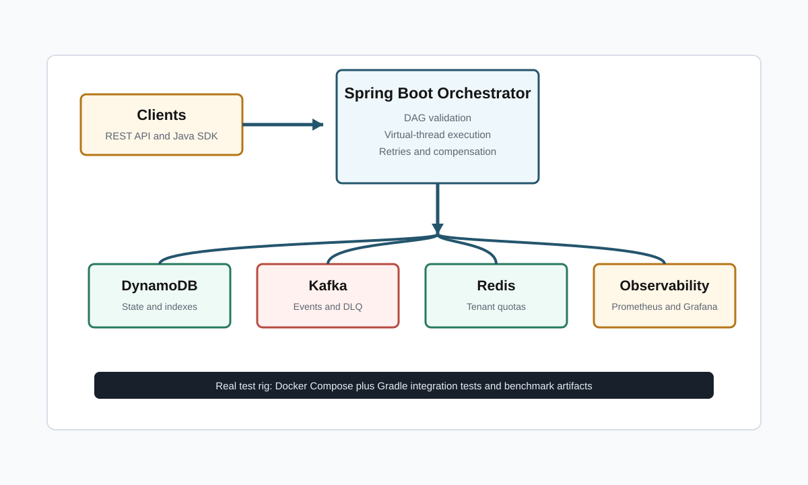

Distributed durable execution for Java teams
Helios
A fault-tolerant workflow engine that validates dependency graphs, persists execution state, publishes step transitions, enforces tenant quotas, and converts plain English workflow descriptions into executable DAG drafts.
Architecture
Java orchestration backed by real infrastructure
The repository separates engine logic from adapters. The production path connects Spring Boot to DynamoDB Local or AWS DynamoDB, Kafka, and Redis through explicit infrastructure implementations.

Benchmark ledger
Claims require artifacts
Helios does not claim production readiness from README prose. Every hard claim must map to committed files under benchmark-results/ generated by the real test rig.
API Console
Frontend wired to the backend
This static frontend calls the Spring Boot API at the backend URL below. Start the orchestrator, keep the URL as http://localhost:8080, and use the console to synthesize, register, trigger, and inspect workflows.
{ "status": "waiting" }
Setup
Backend and frontend connection
The backend is the Spring Boot orchestrator. The frontend is the static website in website/. The website reads and writes through REST endpoints exposed by the backend.
docker compose up -d dynamodb-local redis kafka
gradle :orchestrator:bootRun --args='--helios.infrastructure.mode=real'
open website/index.html
gradle :orchestrator:integrationTest